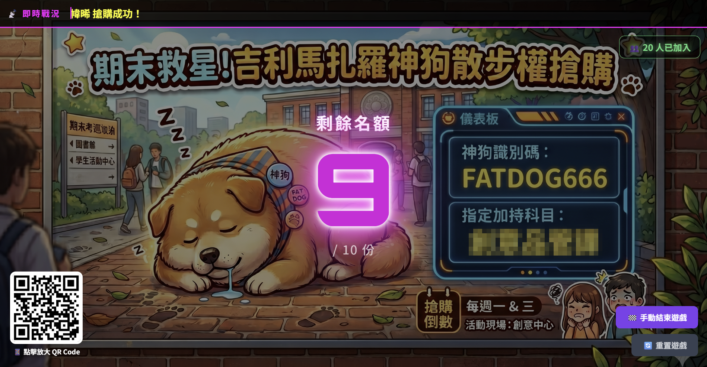
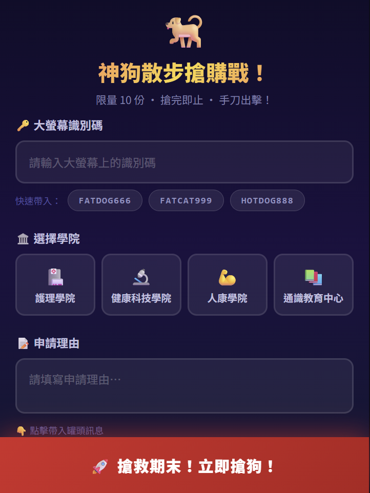
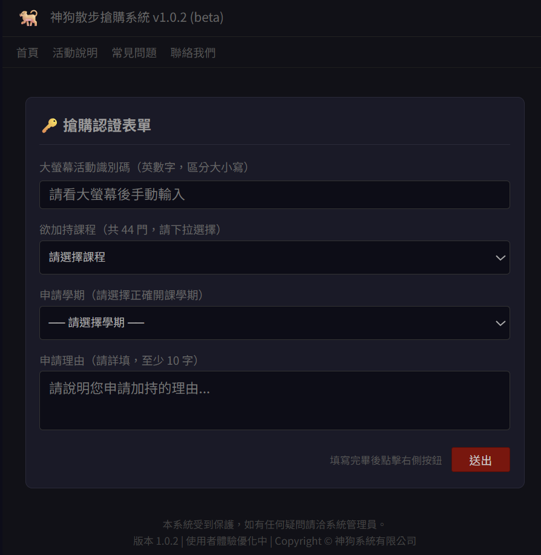
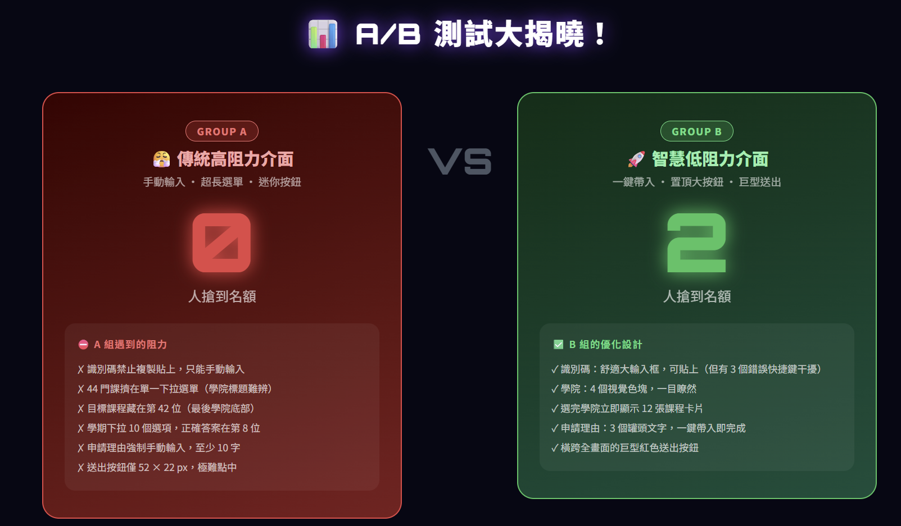

教學遊戲
Fat Dog Rush
2026.04 · 個人專案

FIG. 03 — 產品主畫面
關於這個作品
Fat Dog Rush 是一個讓學生親身成為 A/B 測試受試者的課堂遊戲。
教師開啟場次，學生掃 QR code 加入，系統將學生分為 A、B 兩組。兩組人面對的是「完全不同設計」的同一件事——A 組看到的是遊戲化的搶購戰介面，B 組看到的是正式的認證申請表單。學生只管搶完 10 個名額，搶完後教師揭曉兩個版本的長相。
學生頓時明白：剛才自己對這件事的感受（好玩？煩？焦慮？），其實是被介面設計塑造出來的——這就是 A/B 測試在測的東西。
作品亮點
A/B 兩版介面：遊戲化搶購 vs 正式申請表單，呈現完全不同體驗
搶完才揭曉兩版差異，學生親身感受設計如何影響行為
讓 A/B 測試從抽象概念變成可討論的親身經歷
操作畫面


